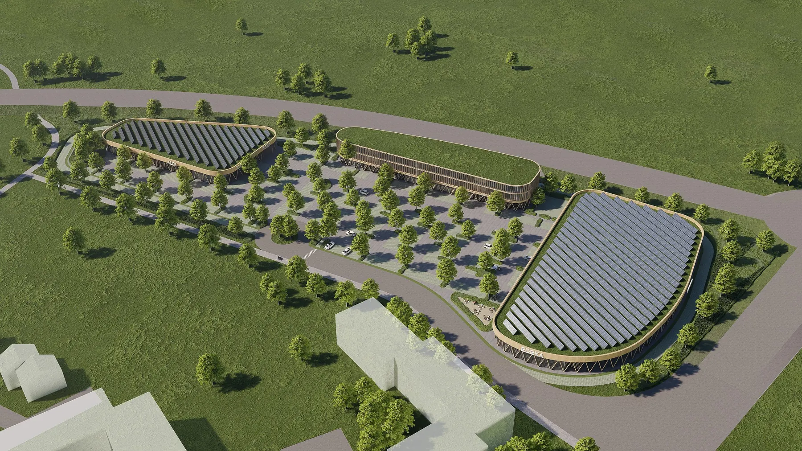

Amperauen, Moosburg
Innovatives Nahversorgungsquartier in Moosburg: Nachhaltigkeit und Architektur im Fokus
Innovatives Nahversorgungsquartier in Moosburg: Nachhaltigkeit und Architektur im Fokus
Die Verwirklichung eines gemischt-genutzten Nahversorgungsquartiers in Moosburg an der Isar steht bevor. Das erfolgreiche Konzept, das auf Nachhaltigkeit, Innovation und eine organische Architektur mit einem hohen Holzanteil setzt, hat sich im Realisierungswettbewerb der Stadt durchgesetzt.
Das geplante Einzelhandelszentrum, das entlang der malerischen Ufer der Amperauen an der Westtangente entsteht, hat nun sein erstes Gesicht enthüllt. Wir sind stolz darauf, Ihnen einige Details unserer Vision vorstellen zu dürfen. Auf einem großzügigen Grundstück im Nordwesten von Moosburg an der Isar entsteht das innovative Quartier Amperauen mit einer Fläche von rund 19.800 m². Dieses Vorhaben verspricht nicht nur ein notwendiges Nahversorgungsangebot für den Ortsteil und die umliegenden Gemeinden, sondern setzt auch auf nachhaltige Entwicklung und organische Architektur, die sich harmonisch in die Umgebung einfügt.
"Einzigartig!“ „Sehr besonders!“ „Noch nie da gewesen!": Ein einstimmiges Votum für das Konzept in Moosburg
Im Zentrum steht ein Ärztehaus mit 4.380 qm BGF. Das Einzelhandelszentrum umfasst zwei Märkte mit 3.500 qm für einen Vollsortimenter (rund 2.080 qm Verkaufsfläche) und etwa 1.720 qm für einen Discounter. Im Erdgeschoss des Ärztehauses sind zudem ein Drogeriemarkt und eine Apotheke eingeplant. Als Mieter nennt der Münchner Merkur Edeka, Aldi und DM. Die ersten Visualisierungen zeigen bereits, wie stimmig sich Vollsortimenter, Ärztehaus und Discounter miteinander in an einem Ort vereinen lassen.
Die architektonische Gestaltung des Quartiers setzt auf Nachhaltigkeit, indem sie auf den nachwachsenden und weitgehend klimaneutralen Rohstoff Holz für die Fassadenkonstruktion zurückgreift. Ein umfassendes Nachhaltigkeitskonzept umfasst zudem Photovoltaikanlagen auf allen Gebäudedächern. Diese dienen nicht nur der Energiegewinnung, sondern auch als Retentionsflächen für Regenwasser.
Competition
Quartier Amperauen in Moosburg: Nachhaltigkeit und Nahversorgung im Fokus
Die Architektur fügt sich harmonisch in ihre Umgebung ein: Abgerundete Gebäudekanten und eine umfangreiche Begrünung greifen die Lage zwischen den Flüssen Amper und Isar auf
Bei Brückner Architekten ist es unser Ziel, kurze Wege zwischen den Gebäuden zu schaffen, weshalb wir 280 Parkplätze und 152 Fahrradstellplätze vorgesehen haben. Gleichzeitig legen wir großen Wert auf hohe Aufenthaltsqualität und die Schaffung eines lebendigen Treffpunkts.
Geplante Fertigstellung: 2025
LEISTUNG:
Nachhaltige Bauweise, Hocheffiziente Flächennutzung
Daten & Fakten
Vollsortimenter-Fläche: ca. 3.050 m²
Discounter-Fläche: ca. 1.720 m²
Ärztehaus-/Drogeriemarkt-Fläche: ca. 4.380 m²
ca. 280 Stellplätze, ca. 140 Fahrradplätze
Wir haben ihr Interesse geweckt? Sie haben Fragen oder wollen einen Termin mit uns vereinbaren? Dann hinterlassen Sie uns bitte eine Nachricht.
Wenn Sie uns eine Nachricht per Kontaktformular senden, so erheben, speichern und verarbeiten wir Ihre Daten nur, soweit dies für die Abwicklung Ihrer Anfragen und für die Korrespondenz mit Ihnen erforderlich ist. Hier finden Sie unsere Datenschutzerklärung.
Hinweis: Leider können wir aufgrund aktueller betrieblicher Umstände derzeit keine Schülerpraktika anbieten. Wir hoffen auf Ihr Verständnis und stehen für zukünftige Möglichkeiten gerne zur Verfügung. Vielen Dank.
Brückner Architekten GmbH Gabriel-Max-Straße 4 81545 München
BRÜCKNERINNEN Interior
REON Realisierung
PROPERTYMAX Maximales Baurecht
TGA Süddeutschland GmbH
Rendeffect GmbH
Wir haben Ihr Interesse geweckt?
Sie haben Fragen oder wollen einen Termin mit uns vereinbaren?